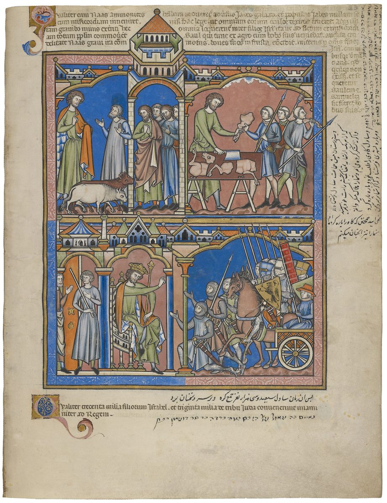

1 Samuel 11 — La Traducción Mister

Las escenas de arriba muestran a Saúl con sus bueyes cuando llega la noticia de Jabes, y luego despedazándolos y entregando los pedazos a mensajeros armados (versículos 5–7); abajo, el rey envía la convocatoria (versículo 8). El rótulo latino bajo las imágenes cuenta «trescientos mil de los hijos de Israel, y treinta mil de la tribu de Judá». Los rótulos en latín, persa y judeopersa los añadieron dueños posteriores del libro.

Notas del traductor — versículo por versículo
Nahás en Jabes de Galaad. «Entonces subió Nahás el amonita y acampó contra Jabes de Galaad». El nombre del rey se escribe exactamente igual que najash, «serpiente». Jabes es la ciudad de Galaad de la que no vino ni un hombre a la asamblea de Mizpá contra Benjamín, y lo pagó con cuatrocientas de sus hijas, que fueron dadas por mujeres a los hombres de Benjamín (Jueces 21:12–14, ya en estas páginas); el hombre que la va a librar es un benjamita de Guibeá. El griego abre el capítulo con «Y sucedió como al cabo de un mes», las palabras que leyó al final del capítulo 10 donde el hebreo dice «él estaba como quien calla» (10:27); la Vulgata latina sigue al griego, y de ella la Douay inglesa: «And it came to pass about a month after this». Josefo llama a Jabes la ciudad principal de los galaaditas y dice que Nahás ya había sacado el ojo derecho a los pueblos de más allá del Jordán que conquistaba (Antigüedades 6.68–71, numerado 6.5.1 en Whiston).
«Corta un pacto con nosotros». Los hombres de Jabes ofrecen condiciones antes de que se dé un golpe: kerat lanu berit, «corta un pacto con nosotros, y te serviremos» (karat). La petición aparece en tres versículos de la Biblia hebrea: dos veces en boca de los gabaonitas, que llegaron a Josué en Gilgal con sacos viejos y pan seco y dijeron «somos sus siervos; ahora, pues, corten un pacto con nosotros» (Josué 9:6, 11, ya en estas páginas), y aquí, donde una ciudad israelita se lo dice a un rey extranjero. La RV60 tiene «Haz alianza con nosotros, y te serviremos»; la NVI «Haz un pacto con nosotros y seremos tus siervos»; la TNM 1987 «Celebra un pacto con nosotros para que te sirvamos».
El ojo derecho. La condición de Nahás es «sacándoles a cada uno el ojo derecho»: binqor, de naqar, el verbo de la ceguera de Sansón, «los filisteos lo agarraron y le sacaron los ojos» (Jueces 16:21, ya en estas páginas), y de la burla de Datán y Abiram, «¿Sacarás los ojos de estos hombres?» (Números 16:14, ya en estas páginas). El propósito se dice en voz alta: «lo pondré como afrenta sobre todo Israel», una jerpá. El hebreo no da razón del ojo derecho; Josefo sí: con el ojo izquierdo tapado por el escudo, un hombre sin el derecho no servía para la batalla (Antigüedades 6.70). La RV60 tiene «que a cada uno de todos vosotros saque el ojo derecho»; la NVI «que le saque a cada uno de ustedes el ojo derecho»; la TNM 1987 «con la condición de perforar y sacarles todo ojo derecho».
«No hay quien nos salve». Los ancianos piden: «Déjanos siete días», heref lanu, el verbo de «soltar», para «enviar mensajeros por todo el territorio de Israel; y si no hay quien nos salve, saldremos a ti». Ein moshía, «no hay quien salve», es la frase de la maldición del Deuteronomio, «no serás sino oprimido y robado, siempre, sin que haya quien te salve» (Deuteronomio 28:29, ya en estas páginas), y responde a la burla que cerró el capítulo anterior, «¿Cómo nos va a salvar este?» (10:27). «Salir» es rendirse.
Siete días de tregua. La RV60 tiene «Danos siete días, para que enviemos mensajeros por todo el territorio de Israel»; la NVI «Si no hay quien nos libre de ustedes, nos rendiremos»; la TNM 1987 «si no hay salvador de nosotros, entonces tendremos que salir a donde ti». Josefo dice que los galaaditas no se atrevieron a responder ni una cosa ni la otra, y pidieron los siete días para llamar a sus parientes (Antigüedades 6.72).
Detrás de los bueyes. Los mensajeros llegan «a Guibeá de Saúl», la primera vez que la ciudad lleva su nombre, y el pueblo llora. «Y mira, Saúl venía del campo detrás de los bueyes»: el rey escogido en Mizpá está otra vez en el campo con el ganado. El griego lee «después de la mañana»: ha-baqar, «los bueyes», y ha-boqer, «la mañana», son las mismas cuatro letras, y la mañana vuelve en el versículo 11, «a la vigilia de la mañana». Josefo dice que Saúl volvía de las labores del campo y halló llorando a la ciudad (Antigüedades 6.75, numerado 6.5.2 en Whiston). La RV60 tiene «Saúl que venía del campo, tras los bueyes»; la TNM 1987 «aquí viene Saúl del campo, detrás de la vacada»; la NVI «Saúl regresaba del campo arreando sus bueyes».
El espíritu irrumpe sobre Saúl. «Y el espíritu de Dios irrumpió sobre Saúl al oír él estas palabras»: tsalach, el verbo de la señal en Guibeá de Dios (10:6, 10) y del espíritu sobre Sansón, «el espíritu de Jehová irrumpió sobre él» (Jueces 14:6, ya en estas páginas). En Guibeá trajo profecía; aquí trae ira, «y su ira se encendió en gran manera». En los versículos 6 y 9 el texto escrito tiene be-, «en», donde el margen lee ke-, «como»; el sentido es el mismo. El griego lee «el espíritu del Señor». La RV 1909 tiene «el espíritu de Dios arrebató á Saúl»; la RV60 «el Espíritu de Dios vino sobre él con poder»; la TNM 1987 «el espíritu de Dios entró en operación sobre Saúl», su manera habitual, que refleja la idea de esa versión del espíritu como la fuerza activa de Dios.
Los pedazos enviados por Israel. «Y tomó una yunta de bueyes y los despedazó, y los envió por todo el territorio de Israel por mano de los mensajeros»: vay-nattejehu, el verbo del levita que «la despedazó, miembro por miembro, en doce pedazos, y la envió por todo el territorio de Israel» (Jueces 19:29, ya en estas páginas; natach). «Por todo el territorio de Israel» aparece en siete versículos de la Biblia hebrea, dos de ellos en este capítulo y el primero de todos ese de Jueces. La ciudad es la misma, Guibeá de Benjamín; entonces los pedazos llamaron a las tribus contra ella, y ahora las llaman a seguir a un hombre de ella. Esta vez la amenaza se dice claramente, y apunta al ganado: «Al que no salga en pos de Saúl y en pos de Samuel, así se le hará a sus bueyes». «Una yunta de bueyes» aparece en tres versículos de la Biblia hebrea; los otros dos cuentan las quinientas yuntas de Job (Job 1:3, ya en estas páginas, y 42:12, todavía no). Josefo hace que Saúl desjarrete sus bueyes en vez de despedazarlos, y amenace con lo mismo a todo el que no acudiera armado al Jordán al día siguiente (Antigüedades 6.77, numerado 6.5.3 en Whiston). La RV60 tiene «tomando un par de bueyes, los cortó en trozos»; la TNM 1987 «tomó un par de toros y los cortó en pedazos»; la NVI «agarró dos bueyes y los descuartizó».
El pavor de Jehová, como un solo hombre. «Y cayó el pavor de Jehová sobre el pueblo, y salieron como un solo hombre». «El pavor de Jehová» aparece en siete versículos de la Biblia hebrea, este el primero, luego tres en Isaías 2 y tres en Crónicas (pajad). «Como un solo hombre» aparece en nueve versículos, y tres de ellos son la revista contra Guibeá, cuando «la congregación se reunió como un solo hombre» (Jueces 20:1, 8, 11, ya en estas páginas). El griego dice «gritaron como un solo hombre». La RV60 tiene «cayó temor de Jehová sobre el pueblo, y salieron como un solo hombre»; la TNM 1987 «el pavor de Jehová empezó a caer»; la NVI «El temor del Señor se apoderó del pueblo», que no conserva el nombre.
Bézec: trescientos mil. «Y les pasó revista en Bézec», paqad, el verbo de un censo, y se cuenta a Israel y a Judá por separado: «fueron los hijos de Israel trescientos mil, y los hombres de Judá treinta mil». Bézec está al oeste del Jordán, frente a Jabes; si es el Bézec donde peleó Judá (Jueces 1:4, ya en estas páginas) es incierto. El griego lee «seiscientos mil» y «setenta mil», y Josefo setecientos mil sin contar a Judá, y setenta mil de Judá (Antigüedades 6.78). La NVI tiene «Saúl los reunió en Bézec para pasar revista»; la TNM 2019 «había 300.000 israelitas y 30.000 hombres de Judá».
«Tendrán salvación». La respuesta vuelve con los mensajeros: «Mañana, cuando caliente el sol, tendrán salvación», teshuá, de la raíz de moshía en el versículo 3, y la palabra del clamor de Sansón: «Tú has dado esta gran salvación por mano de tu siervo» (Jueces 15:18, ya en estas páginas). Josefo lo afila: Saúl promete llegar al tercer día y vencer antes de la salida del sol, para que el sol saliera sobre hombres ya libres (Antigüedades 6.76, numerado 6.5.2 en Whiston). La RV 1909 tiene «Mañana en calentando el sol, tendréis salvamento»; la RV60 «Mañana al calentar el sol, seréis librados»; la TNM 1987 «Mañana se efectuará la salvación para ustedes, cuando caliente el sol».
«Mañana saldremos a ustedes». Luego los hombres de Jabes dicen a los sitiadores: «Mañana saldremos a ustedes, y harán con nosotros todo lo que sea bueno a sus ojos». Es la rendición prometida en el versículo 3, «saldremos a ti», y los amonitas la oyen como tal; el lector, que acaba de oír el otro «mañana», la oye de la otra manera. El hebreo no dice a quién hablaron; el griego añade «a Nahás el amonita». La RV 1909 tiene «Mañana saldremos á vosotros»; la TNM 1987 «Mañana saldremos a ustedes»; la NVI «Mañana nos rendiremos», que se queda con el sentido de los amonitas.
Tres compañías a la vigilia de la mañana. «Saúl puso al pueblo en tres compañías», sheloshah rashim. «Tres compañías» aparece en cinco versículos de la Biblia hebrea, entre ellos los trescientos de Gedeón (Jueces 7:16) y la emboscada de Abimelec (Jueces 9:43), los dos ya en estas páginas. Entran en el campamento «a la vigilia de la mañana», be-ashmoret ha-boqer, y la frase aparece en dos versículos de la Biblia hebrea: aquí y en el mar, «a la vigilia de la mañana, Jehová miró hacia el campamento de los egipcios» (Éxodo 14:24, ya en estas páginas). Hieren a Amón «hasta que calentó el día», la hora prometida en el versículo 9, «y los que quedaron se dispersaron, y no quedaron de ellos dos juntos». Josefo añade una marcha nocturna al otro lado del Jordán y hace morir en la batalla al propio Nahás (Antigüedades 6.79, numerado 6.5.3 en Whiston); en Samuel, David hablará más tarde de la bondad que Nahás le mostró (2 Samuel 10:2). La RV60 tiene «a la vigilia de la mañana … hasta que el día calentó»; la NVI «antes del amanecer».
«¿Reinará Saúl sobre nosotros?». La victoria vuelve al pueblo contra los que dudaban: «¿Quién es el que decía: Reinará Saúl sobre nosotros? Entreguen a esos hombres, y los mataremos». Las palabras citadas no son las que recoge 10:27, «¿Cómo nos va a salvar este?», pero los hombres son claramente los mismos. En el hebreo la cita es una pregunta sin palabra interrogativa; el griego la convierte en una negativa rotunda, «Saúl no reinará sobre nosotros». La RV60 tiene «¿Quiénes son los que decían: Ha de reinar Saúl sobre nosotros?»; la TNM 1987 «‘Saúl... ¿ha de ser rey sobre nosotros?’»; la NVI «¿Quiénes son los que no querían que Saúl reinara sobre nosotros?».
«No se dará muerte a ningún hombre en este día». Saúl se niega: «porque hoy Jehová ha obrado salvación en Israel», la teshuá del versículo 9, ahora atribuida a Jehová. Josefo da la razón con sus propias palabras: sería indigno manchar con sangre de parientes la victoria que Dios había dado (Antigüedades 6.82). La RV 1909 tiene «hoy ha obrado Jehová salud en Israel»; la RV60 «hoy Jehová ha dado salvación en Israel»; la TNM 1987 «hoy Jehová ha ejecutado salvación en Israel».
«Renovemos allí el reino». Samuel dice: «Vengan, y vayamos a Gilgal, y renovemos allí el reino»: u-nejadesh, de jadash, «nuevo», y melujah, el reino de 10:16 y 10:25. Saúl ha sido hecho rey ya tres veces: ungido en privado (10:1), tomado y aclamado en Mizpá (10:24), y hecho rey en Gilgal. Muchos lectores ven dos o tres relatos de cómo empezó el reino puestos uno junto a otro; «renovar» es la palabra que los une. La RV60 tiene «renovemos allí el reino»; la TNM 1987 «para que constituyamos allí de nuevo la gobernación real»; la TNM 2019 «para reafirmar el reinado de Saúl».
Gilgal: hecho rey delante de Jehová. «Y allí hicieron rey a Saúl delante de Jehová en Gilgal», el campamento de Josué, donde Jehová dijo «Hoy he hecho rodar de sobre ustedes el oprobio de Egipto» (Josué 5:9, ya en estas páginas): el capítulo que empezó con la «afrenta sobre todo Israel» de Nahás termina allí. Es el lugar adonde Samuel dijo a Saúl que bajara y lo esperara para ofrecer «sacrificios de paz» (10:8), y las ofrendas se hacen: zevajim shelamim, y el par aparece en dos versículos de la Biblia hebrea, aquí y en el sacrificio del pacto en el Sinaí (Éxodo 24:5, ya en estas páginas). El griego dice que Samuel ungió allí a Saúl, y que fueron Samuel y todo Israel los que se alegraron; Josefo también hace que Samuel lo unja por segunda vez con el aceite santo (Antigüedades 6.83, numerado 6.5.4 en Whiston). En el hebreo, «allí Saúl y todos los hombres de Israel se alegraron en gran manera», y Samuel ni siquiera se nombra en el versículo. La RV60 tiene «sacrificaron allí ofrendas de paz delante de Jehová»; la RV 1909 «sacrificaron allí víctimas pacíficas delante de Jehová»; la TNM 1987 «ofrecieron sacrificios de comunión allí delante de Jehová».
Patrones que vale la pena recordar
Dónde esta traducción mantiene las palabras exactas y distintas: «cortar un pacto» para karat berit, como en Josué 9; «sacar» el ojo para naqar, como en Jueces 16:21; «afrenta» para jerpá, el «oprobio» de Gilgal en Josué 5:9; «no hay quien salve» para ein moshía; «irrumpir sobre» para tsalach, como en 10:6; «despedazó» y «por todo el territorio de Israel», como en Jueces 19:29; «el pavor de Jehová»; «como un solo hombre», como en Jueces 20; «salvación» para teshuá, como en Jueces 15:18; «tres compañías», como en Jueces 7:16; «la vigilia de la mañana», como en Éxodo 14:24; «renovar el reino»; y «sacrificios de paz», como en 10:8.
Ecos pagados. Los pedazos enviados por Israel desde Guibeá en Jueces 19:29 se envían otra vez desde Guibeá; Jabes de Galaad, vaciada de sus hijas en Jueces 21, es salvada por un benjamita; la burla de 10:27, «¿Cómo nos va a salvar este?», tiene su respuesta en «Jehová ha obrado salvación»; y Saúl baja al Gilgal de 10:8.
Ecos sembrados. El discurso de Samuel que une el ataque de Nahás con la petición de un rey (1 Samuel 12:12, ya en estas páginas), los hombres de Jabes que bajarán el cuerpo de Saúl y lo sepultarán (31:11–13), y Hanún hijo de Nahás (2 Samuel 10:2), ninguno de los dos todavía en estas páginas.
Próxima entrega de este libro: 1 Samuel 12 — la despedida de Samuel en Gilgal: «¿De quién he tomado el buey?», la historia desde Egipto hasta Nahás contada otra vez, truenos y lluvia en la siega del trigo, y «no se aparten en pos de vanidades».